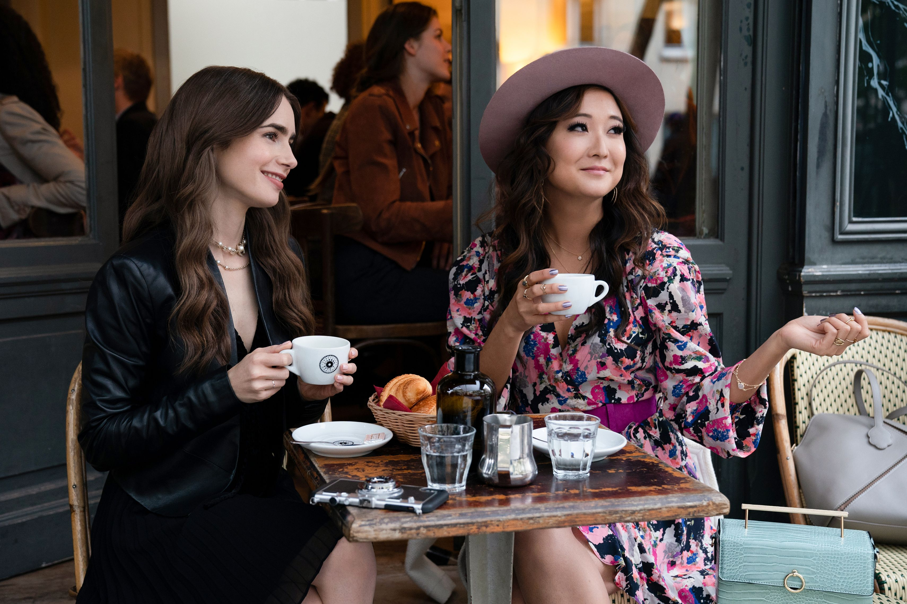
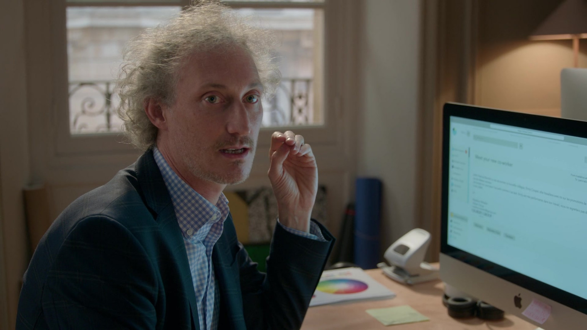

Elenco y personajes
Elenco Principal de Emily en París
Lily Collins como Emily Cooper
Emily es una joven ejecutiva de marketing de Chicago que se muda a París para aportar una perspectiva estadounidense a la agencia Savoir. Su entusiasmo y estilo único la hacen destacar, aunque a menudo enfrenta desafíos culturales y profesionales en su nuevo entorno.
Lucas Bravo como Gabriel
Gabriel es el atractivo chef y vecino de Emily. Su relación con Emily es una de las principales tramas románticas de la serie, marcada por complicaciones debido a su relación con Camille.
Ashley Park como Mindy Chen
Mindy es la primera amiga de Emily en París y una aspirante a cantante. Su amistad proporciona a Emily apoyo emocional y una conexión con la vida parisina fuera del trabajo.
Philippine Leroy-Beaulieu como Sylvie Grateau
Sylvie es la jefa de Emily en Savoir. Elegante y exigente, representa el estilo y la actitud parisina, a menudo chocando con la perspectiva estadounidense de Emily.
Camille Razat como Camille
Camille es una joven parisina y amiga de Emily, quien luego se revela como la novia de Gabriel. Su personaje añade complejidad al triángulo amoroso central de la serie.
Samuel Arnold como Julien
Julien es un colega de Emily en Savoir, conocido por su estilo y comentarios agudos. Aporta humor y perspectiva al entorno laboral de Emily.
Bruno Gouery como Luc
Luc es otro colega en Savoir, caracterizado por su comportamiento excéntrico y consejos poco convencionales, que a menudo ayudan a Emily a navegar la cultura francesa.
Lucien Laviscount como Alfie
Alfie es un banquero británico que se convierte en interés amoroso de Emily en temporadas posteriores, ofreciendo una alternativa a su relación con Gabriel.